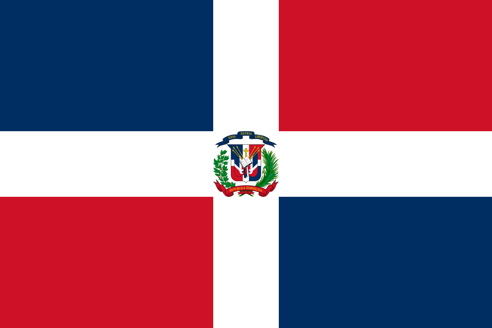

Fecha y lugar de nacimiento
Naci el 8 de diciembre del 2007 en Republica Dominicana, Santo Domingo

Mi país, la República Dominicana, es un lugar que llevo en el corazón. Sus playas, montañas y la calidez de su gente me llenan de orgullo. Cada rincón de esta tierra refleja mi identidad y siempre me siento agradecido por ser parte de ella.
Profesión soñada
Mi Carrera soñada es ser odontologa y estudiar en la Universidad UNIBE
Aspiro a crecer y forjar mi camino como una odontóloga apasionada y comprometida, brindando ayuda a los demás e impactando positivamente en sus vidas, superando desafíos y aprendiendo de cada experiencia.